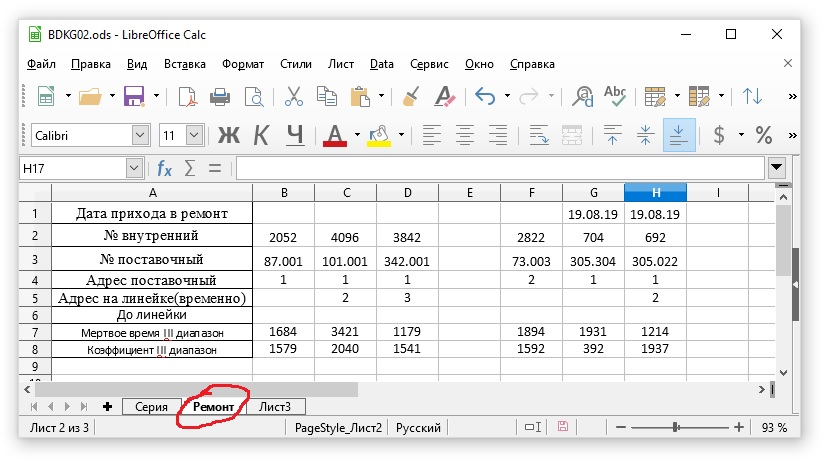
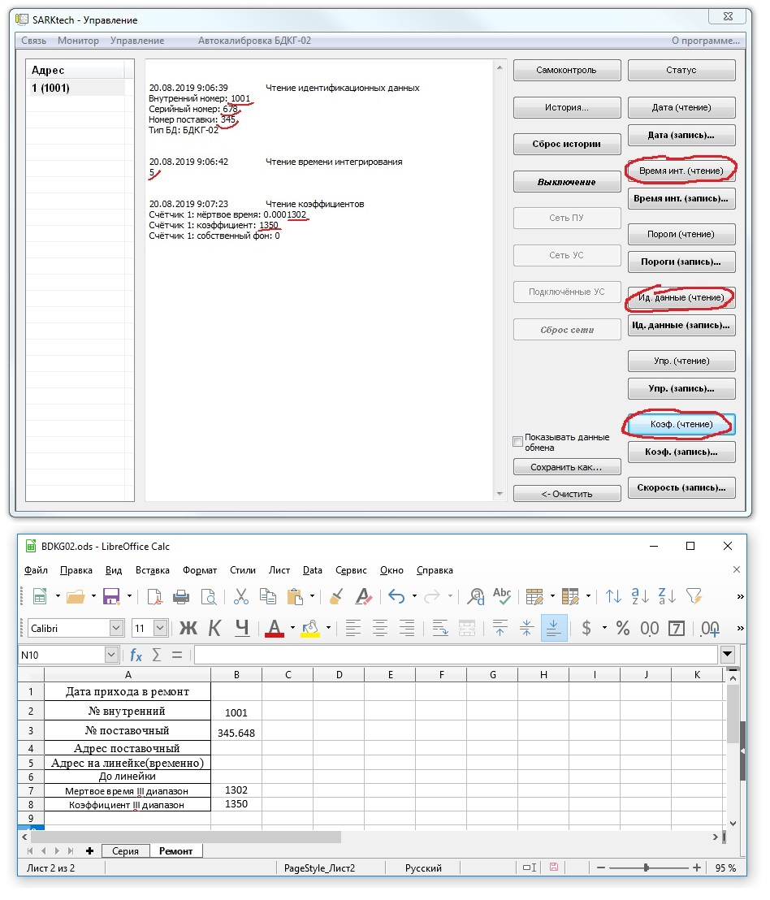
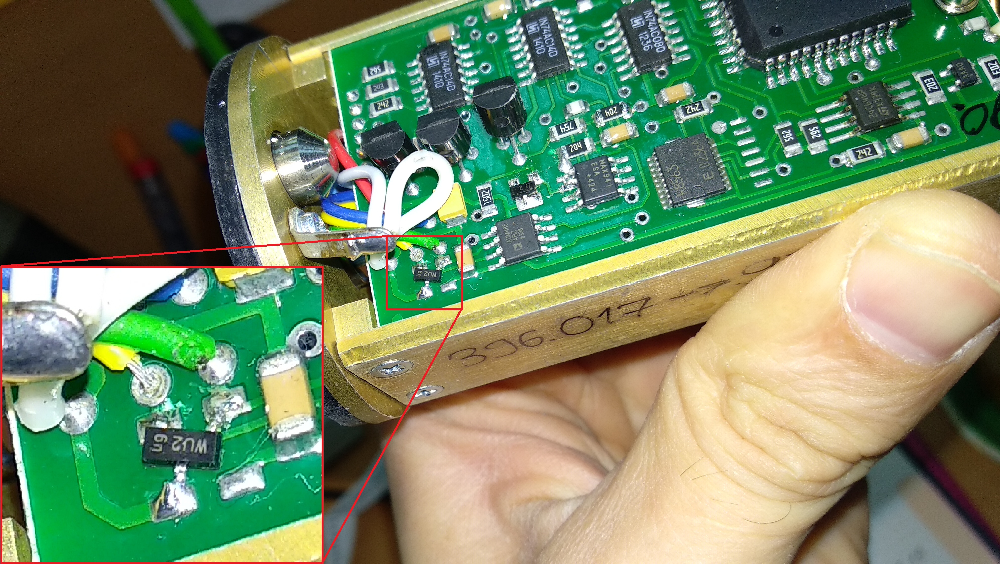
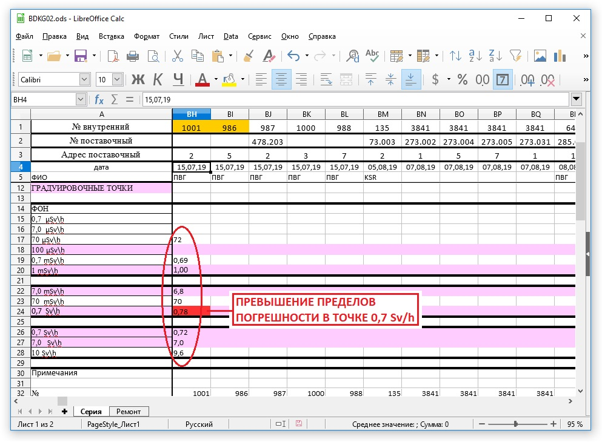

БДКГ-02. Ремонт
- Сделать запись в журнале ремонта (СРК)
- Подключиться через SARKtech (если не подключается)
- Проверить скорость счета
- Прочитать "Инд. данные" — проверить, совпадают ли номера, если нет — исправить
- "Время интегрирования" — поставить значение 255 (в ремонт приходят со значением 5)
- Открыть Журнал градуировки БДКГ-02
- Выбрать вкладку "Ремонт"

- Заполнить все поля для каждого блока
- Дату прихода в ремонт
- Внутренний номер
- № поставочный (№ = "Номер поставки" + "Серийный номер")
- Адрес поставочный

Обязательно записать адрес блока! В процессе работы над БД адрес может поменяться, а заказчику блок должен вернуться с
тем же адресом, что и пришел.
- Если БД разбирается, сделать доработку от статики (Диодная сборка PESD12VS2UT)

- Желательно перепаять со 100V на 200V
- В маршрутном листе сделать отметку с датой напротив АТ130
- Отдать на линейку
После того, как БД вернется с линейки
- Открыть Журнал градуировки БДКГ-02
- Проверить градуировочные точки

- В 3-м диапазоне данные должны соответствовать:
Коэфициент > 1300
Мертвое время < 1350e-7
- Сделать (калибровку фона и снять показания с источником)
- Проверить на герметичность
- Заполнить отчет о ремонте (дефекты, принятые меры)
- Отдать отчет на склад для выписки накладных
- Если нужна поверка:
- В отчете о ремонте отметить:
- "Диагностика ..."
- Если разбирался — "установка контрольных пломб"
- Если поверялся — "подготовка к гос. поверке" и "Гос поверка"
- Поставить "время инт" — 5
- Проверить адрес блока, если менялся — поставить какой надо
- Готово